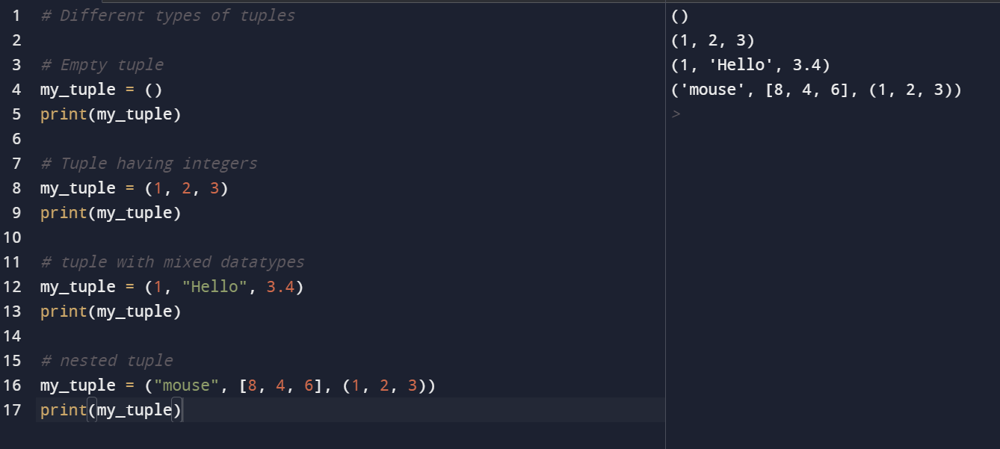

-def : keyword used to declare a function
-function_name : any name given to the function
-arguments : any value passed to function
-return (optional) : returns value from a function
A set is a collection of unique data. That is, elements of a set cannot be duplicate.
For example, Suppose we want to store information about student IDs. Since student IDs cannot be duplicate, we can use a set.
In Python, we create sets by placing all the elements inside curly braces {}, separated by comma.
A set can have any number of items and they may be of different types (integer, float, tuple, string etc.). But a set cannot have mutable elements like lists, sets or dictionaries as its elements.
Let's see an example
input
output
Sets are mutable. However, since they are unordered, indexing has no meaning.
We cannot access or change an element of a set using indexing or slicing.
Set data type does not support it.
Add Items to a Set in Python
In Python, we use the add() method to add an item to a set. For example,

The update() method is used to update the set with items other collection types (lists, tuples, sets, etc).
For example,
A tuple is created by placing all the items (elements) inside parentheses (), separated by commas. The parentheses are optional, however, it is a good practice to use them.
A tuple can have any number of items and they may be of different types (integer, float, list, string, etc.).

a list, each element of a tuple is represented by index numbers (0, 1, ...) where the first element is at index 0.
We use the index number to access tuple elements. For example,
1. Indexing
We can use the index operator [] to access an item in a tuple, where the index starts from 0.
So, a tuple having 6 elements will have indices from 0 to 5. Trying to access an index outside of the tuple index range( 6,7,... in this example) will raise an IndexError.
The index must be an integer, so we cannot use float or other types. This will result in TypeError.
Likewise, nested tuples are accessed using nested indexing, as shown in the example below.
We can access a range of items in a tuple by using the slicing operator colon : .